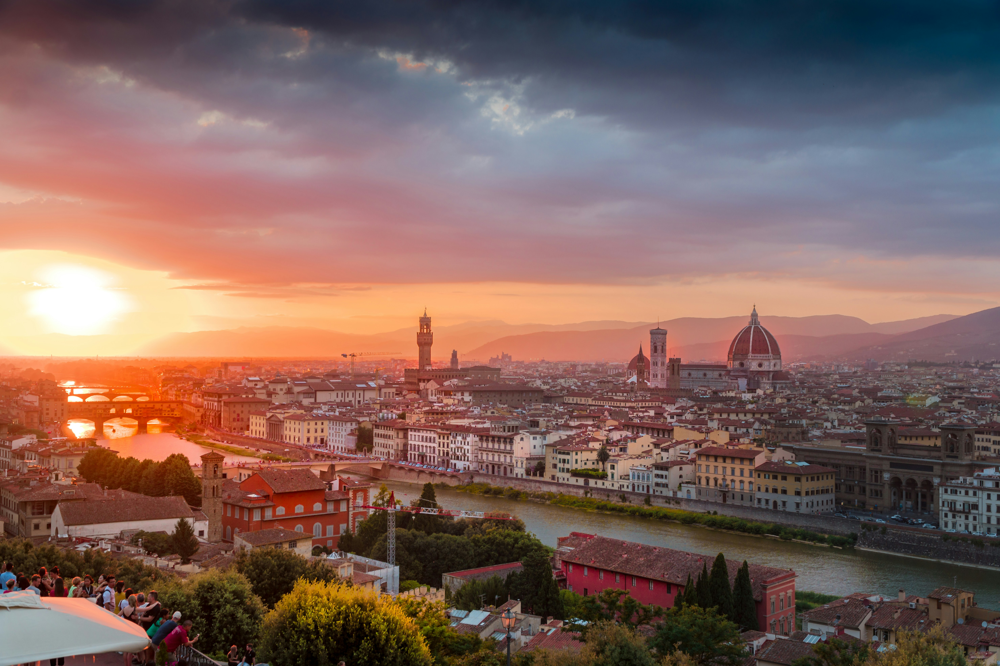

Photographs & Drawings
Outside of mathematics, I have a deep interest in black-and-white drawing and photography. Here, you can find a selection of my drawings and photographs taken during my travels.

Cologne Cathedral
A magnificent example of Gothic architecture rising above the city of Cologne.

London’s Iconic Red Buses
A timeless symbol of the city, bringing life and color to the streets of London.

View of Florence from Piazzale Michelangelo
A breathtaking panorama of Florence, where the city’s timeless beauty meets the soft glow of the Tuscan sunset.